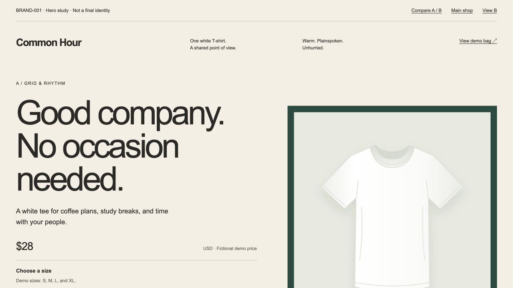
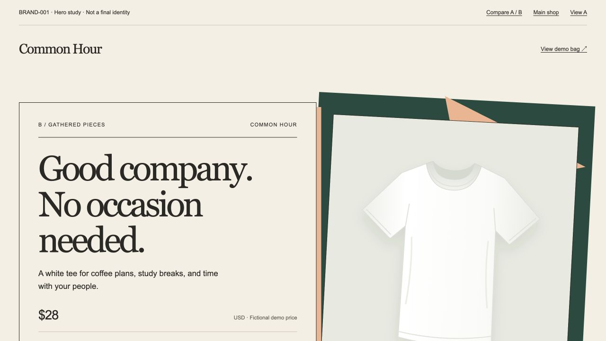

A / Modernist exploration
Grid & rhythm
Compact metadata, aligned columns, open space, and repeated rules translate a modernist reference into an orderly, unhurried invitation.
Open study ABRAND-001 · Common Hour · Visual decision
Two explorations / One shared brief
Common Hour is a warm, plainspoken, unhurried Everyperson brand for café plans, study breaks, and time with friends. Compare the composition, hierarchy, and visual language. A final direction and logo have not been selected.

A / Modernist exploration
Compact metadata, aligned columns, open space, and repeated rules translate a modernist reference into an orderly, unhurried invitation.
Open study A
B / Postmodernist exploration
Structured overlap, angular paper forms, and mixed typographic languages translate a postmodern reference into a collected café composition.
Open study BBoth studies use original HTML/CSS and the same local shirt illustration. Each has a working size selector and temporary demo bag.